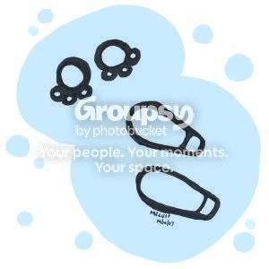

เย้ ถนัดแต่ Photoshop กะ Image Ready 3d Max พอได้ แต่ Illust ยังงูๆปลาๆง่า T T
http://eco.froztic.in.th/archive/ecofanclub/
กระทู้ [FC]~FanArt Collection~ วาดได้ตามใจฉัน
http://eco.froztic.in.th/archive/ecofanclub/viewtopic.php?f=21&t=1294
หน้า 121 จากทั้งหมด 143
ใช้เป็นแต่ photoshop อะ -0-
comelyfay เขียน:ใช้เป็นแต่ photoshop อะ -0-
เหมือนกัน-*-


หมาก็เป็นแต่ pts นะ =w="
imageready เอาไว้ทำ gif อย่างเดียวเลย อย่าง avatar เนี่ย =w="
เทคนิคไม่มีติดตัวเลย มีแต่ดูงานชาวบ้านแล้ว clone เอา แค่นี้ได้เทคนิคการ"ถึก"ติดตัวมาเพียบ = ="
ยิ่งตอน clone hydralisk นี่ถึกสะใจมาก = ="
ปกติก็วาดมือก่อน ภาพไหนถูกใจอยากลง cg ค่อยตัดเส้นมาลุยอีกที
imageready เอาไว้ทำ gif อย่างเดียวเลย อย่าง avatar เนี่ย =w="
เทคนิคไม่มีติดตัวเลย มีแต่ดูงานชาวบ้านแล้ว clone เอา แค่นี้ได้เทคนิคการ"ถึก"ติดตัวมาเพียบ = ="
ยิ่งตอน clone hydralisk นี่ถึกสะใจมาก = ="
ปกติก็วาดมือก่อน ภาพไหนถูกใจอยากลง cg ค่อยตัดเส้นมาลุยอีกที
ใช้เป็นแต่โฟโต้ 5.5 เท่านั้นละค่ะ 6 ขึ้นไปนี้...
"มันคืออะไรวะ=_="ll" ให้เพื่อนสอนยังไงก็จำไม่ได้อยู่ดี
รักนะโฟโต้เจ้าคุณปู่ >3<)
เห็นโปเกมอนของคุณ bangiras แล้วนึกถึงขนมที่แต่ก่อนแถมตัวต่อโปเกมอนยืนได้เลย(5) ชอบตัวที่สีส้มๆ เหมือนกิ้งก่าหางเป็นไฟๆ ที่สุดในเรื่องแล้วล่ะ(ตอน GB แบบไม่มีสีนี้อัพตัวนี้เวลอัพไปสู้ตัวแรกเลย)
แปะๆ ต่อ งวดที่แล้วน้องหมารอบนี้
momonga - radish

พยายามดูให้มันโลลิหน่อยนะวาดแนวโลลิไม่ค่อยเป็น T_T ชอบแนวโกธมากกว่าความจริงว่าจะให้เป็นแครอทแต่ตอนได้มาดันเอาไปคุยกับชาวนาตอนมันเป็นบัคอยู่เซงเลยแครอทส้มแป๊ดสีซีดทันที=_="ll
"มันคืออะไรวะ=_="ll" ให้เพื่อนสอนยังไงก็จำไม่ได้อยู่ดี
รักนะโฟโต้เจ้าคุณปู่ >3<)
เห็นโปเกมอนของคุณ bangiras แล้วนึกถึงขนมที่แต่ก่อนแถมตัวต่อโปเกมอนยืนได้เลย(5) ชอบตัวที่สีส้มๆ เหมือนกิ้งก่าหางเป็นไฟๆ ที่สุดในเรื่องแล้วล่ะ(ตอน GB แบบไม่มีสีนี้อัพตัวนี้เวลอัพไปสู้ตัวแรกเลย)
แปะๆ ต่อ งวดที่แล้วน้องหมารอบนี้
momonga - radish
พยายามดูให้มันโลลิหน่อยนะวาดแนวโลลิไม่ค่อยเป็น T_T ชอบแนวโกธมากกว่าความจริงว่าจะให้เป็นแครอทแต่ตอนได้มาดันเอาไปคุยกับชาวนาตอนมันเป็นบัคอยู่เซงเลยแครอทส้มแป๊ดสีซีดทันที=_="ll
มีแต่คนถนัดโปรแกรม โฟโต้ช็อป กะอิลาส ทั้งนั้นเลย - -
บ้านเราเปิดแล้วมันทำเครื่องอืดมากๆ
เลยลงสีได้แต่ใน Paint อนาทมากมายเลยค่ะ - -
อันนี้วาดดินสอ

ตัดเส้นปิ๊กม่าหัว 0.05 - - สแกนใหม่ขยายขนาด..

ลงสีใน Paint แบ็กกราวก็ทำไม่ได้ เล่นให้ภาพมันดูฟุ้งๆก็ทำไม่ได้ แสงเงาก็เพี้ยนๆ - -
ข้อจำกัดเยอะอ่ะ อยากใช้ โฟโต้ช็อปแบบชาวบ้านเค้ามั่ง T^T

บ้านเราเปิดแล้วมันทำเครื่องอืดมากๆ
เลยลงสีได้แต่ใน Paint อนาทมากมายเลยค่ะ - -
อันนี้วาดดินสอ
ตัดเส้นปิ๊กม่าหัว 0.05 - - สแกนใหม่ขยายขนาด..
ลงสีใน Paint แบ็กกราวก็ทำไม่ได้ เล่นให้ภาพมันดูฟุ้งๆก็ทำไม่ได้ แสงเงาก็เพี้ยนๆ - -
ข้อจำกัดเยอะอ่ะ อยากใช้ โฟโต้ช็อปแบบชาวบ้านเค้ามั่ง T^T
สวยดีนะ ไม่รู้นะ แต่ในความเห็น น่าจะใส่เงา ในส่วนของสีดำให้มากก่านี้หน่อยนึง-3-
/เผ่น เฟี้ยว
/เผ่น เฟี้ยว
paint ให้เล่นเงาแบบนั้นหมาทำไม่ได้นะ ปาดโดนเส้นวินาศสิ้น = ="
อย่างดีก็ OE ล่ะนะ mask ได้ หรือ layer ได้น่ะพอไหว =w="
อย่างดีก็ OE ล่ะนะ mask ได้ หรือ layer ได้น่ะพอไหว =w="

จริงๆก็ใส่เงานะคะ แต่มันดันกลืนๆกันซะงั้นเลย T^T
อย่างคุณ bangiras ว่า น่าจะ เบรกสีดำลงหน่อย จะได้เห็นชัดกว่านี้ - -
อันนั้นมันโดนโฟโต้บั๊กเก็ตมันย่อขนาดไปหน่อยนึงด้วยอ่าค่ะ
แก้ไขเป็นแบบเต็มๆแล้วนะคะ แฮะๆ ^^"
อย่างคุณ bangiras ว่า น่าจะ เบรกสีดำลงหน่อย จะได้เห็นชัดกว่านี้ - -
อันนั้นมันโดนโฟโต้บั๊กเก็ตมันย่อขนาดไปหน่อยนึงด้วยอ่าค่ะ
แก้ไขเป็นแบบเต็มๆแล้วนะคะ แฮะๆ ^^"
โอ้ย งานเยอะ-*- อิลาส มันตัดเส้นดีกว่าโฟโต้สินะ แล้วมีฟังชั่นไรที่ดีกว่าโฟโตมั้ยหว่า-.-
/เย..อากาสเย็นขึ้น ติ๊ดดดดนึง-*-
/เย..อากาสเย็นขึ้น ติ๊ดดดดนึง-*-
ใครมีเทคนิคลงสีมาแบ่งปันกันดีกว่าเนาะ^^
เพราะช่วงนี้สกิลลงสีตกต่ำไม่ได้ลงเลยทำแต่รัฟอย่างเดียว=_="ll
แต่ตอนนี้เริ่มไม่ใช้พิกม่าตัดเส้นละใช้แล้วรู้สึกภาพไม่พริ้วแต่ตอนสแกนลงสีนี้ลำบ๊ากลำบาก=_="ll
สองอันนี้ไม่ตัดเส้นปรับคอนทราสเอามั่วๆ=.="ll


อันนี้ตัดเส้นแล้วลงสีแบบไม่ทับเส้น

ส่วนอันนี้ลงสีแบบทับเส้น+ไม่ได้ตัดเส้น

เทคนิคเราคือปาด+สร้างเลเยอร์เยอะๆเอาบางทีได้100+เลเยอร์ต่อ1รูป=.=(เรียกเทคนิคยังไงฟะนี้=_=*)
เพราะไม่รู้ว่าโฟโต้เวอร์ฯอื่นๆปรับเส้นลากเส้นยังไงเลยเอามันแต่5.5นี้ละง่ายดีแต่เปลี่ยนหัวแปรงไม่ได้ว่าจะลองเล่นเพนเตอร์ดูแต่ดูแล้วจะรุ่งริ้งมากกว่ารุ่งโรจน์ยังไงไม่รู้=_=
แนะเว็บเลือก scheme สี เลือกได้ทั้งแบบตรงข้าม สามเหลี่ยม หรือ แบบตัวเองก็ได้
kuler
ความจริงมีอีกเว็บนึงที่มีแบบทั้งvivid, mono และอื่นๆ เหมือนเราเลือกสีทาบ้านได้เลยแต่เว็บดันเจ๊งไปเรียบวุธ=_="ll
เพราะช่วงนี้สกิลลงสีตกต่ำไม่ได้ลงเลยทำแต่รัฟอย่างเดียว=_="ll
แต่ตอนนี้เริ่มไม่ใช้พิกม่าตัดเส้นละใช้แล้วรู้สึกภาพไม่พริ้วแต่ตอนสแกนลงสีนี้ลำบ๊ากลำบาก=_="ll
สองอันนี้ไม่ตัดเส้นปรับคอนทราสเอามั่วๆ=.="ll
อันนี้ตัดเส้นแล้วลงสีแบบไม่ทับเส้น
ส่วนอันนี้ลงสีแบบทับเส้น+ไม่ได้ตัดเส้น
เทคนิคเราคือปาด+สร้างเลเยอร์เยอะๆเอาบางทีได้100+เลเยอร์ต่อ1รูป=.=(เรียกเทคนิคยังไงฟะนี้=_=*)
เพราะไม่รู้ว่าโฟโต้เวอร์ฯอื่นๆปรับเส้นลากเส้นยังไงเลยเอามันแต่5.5นี้ละง่ายดีแต่เปลี่ยนหัวแปรงไม่ได้ว่าจะลองเล่นเพนเตอร์ดูแต่ดูแล้วจะรุ่งริ้งมากกว่ารุ่งโรจน์ยังไงไม่รู้=_=
แนะเว็บเลือก scheme สี เลือกได้ทั้งแบบตรงข้าม สามเหลี่ยม หรือ แบบตัวเองก็ได้
kuler
ความจริงมีอีกเว็บนึงที่มีแบบทั้งvivid, mono และอื่นๆ เหมือนเราเลือกสีทาบ้านได้เลยแต่เว็บดันเจ๊งไปเรียบวุธ=_="ll
ผมลงสีแบบทับเส้นไม่เป็นล่ะ
ก็เลยลงแบบไม่ทับเส้น (เลเยอร์ที่เป็นเส้น Standard ส่วนที่ลงสีเป็น Multiple)
ก็ ส่นใหญ่จะทำในOC สาดสีลงเป็นพื้นไปก่อน ใช้พู่กันถูๆทำเงา แล้วค่อยป้ายๆสีทับลงไปเรื่อย รู้สึกว่าโอเคเมื่อไหร่ผมก็หยุดเมื่อนั้นแหละฮะ XD
ว่าแล้วก็แปะธีมบล็อคชุดใหม่~♥

นายพรานที่คู่กับมีนง ออริหมาป่าตัวที่แล้ว
http://i133.photobucket.com/albums/q74/ ... me-Hnt.jpg << ดูภาพใหญ่ คลิ้กที่ลิ้งค์นี้เลยฮะ
http://i133.photobucket.com/albums/q74/ ... WTBG-2.jpg
อันนี้BGบล็อคที่กำลังจะใช้ฮะ
ใหญ่มาก เพราะงั้นเป็นลิ้งค์ดีกว่าเนาะ

ด้ายแดง อั๊งส์
สงสัยจะใช้เป็น Comment BG
รอยเท้าเดนตาย ปาดสีเดียว แป๊ปเดียว เลเยอร์เดียว อั่ค...
น่าจะเป็นComment Box BG

โต๊ะญี่ปุ่น ลงสีแบบอนิเมะสั่วๆอ่ะนะ สงสัยจะจับทำHead Blog
http://i133.photobucket.com/albums/q74/ ... -Table.jpg << ดูภาพใหญ่ คลิ้กที่ลิ้งค์นี้ฮะ
ก็เลยลงแบบไม่ทับเส้น (เลเยอร์ที่เป็นเส้น Standard ส่วนที่ลงสีเป็น Multiple)
ก็ ส่นใหญ่จะทำในOC สาดสีลงเป็นพื้นไปก่อน ใช้พู่กันถูๆทำเงา แล้วค่อยป้ายๆสีทับลงไปเรื่อย รู้สึกว่าโอเคเมื่อไหร่ผมก็หยุดเมื่อนั้นแหละฮะ XD
ว่าแล้วก็แปะธีมบล็อคชุดใหม่~♥
นายพรานที่คู่กับมีนง ออริหมาป่าตัวที่แล้ว
http://i133.photobucket.com/albums/q74/ ... me-Hnt.jpg << ดูภาพใหญ่ คลิ้กที่ลิ้งค์นี้เลยฮะ

http://i133.photobucket.com/albums/q74/ ... WTBG-2.jpg

อันนี้BGบล็อคที่กำลังจะใช้ฮะ
ใหญ่มาก เพราะงั้นเป็นลิ้งค์ดีกว่าเนาะ
ด้ายแดง อั๊งส์
สงสัยจะใช้เป็น Comment BG


รอยเท้าเดนตาย ปาดสีเดียว แป๊ปเดียว เลเยอร์เดียว อั่ค...
น่าจะเป็นComment Box BG
โต๊ะญี่ปุ่น ลงสีแบบอนิเมะสั่วๆอ่ะนะ สงสัยจะจับทำHead Blog
http://i133.photobucket.com/albums/q74/ ... -Table.jpg << ดูภาพใหญ่ คลิ้กที่ลิ้งค์นี้ฮะ

นักวาดเยอะจังกระทู้นี้